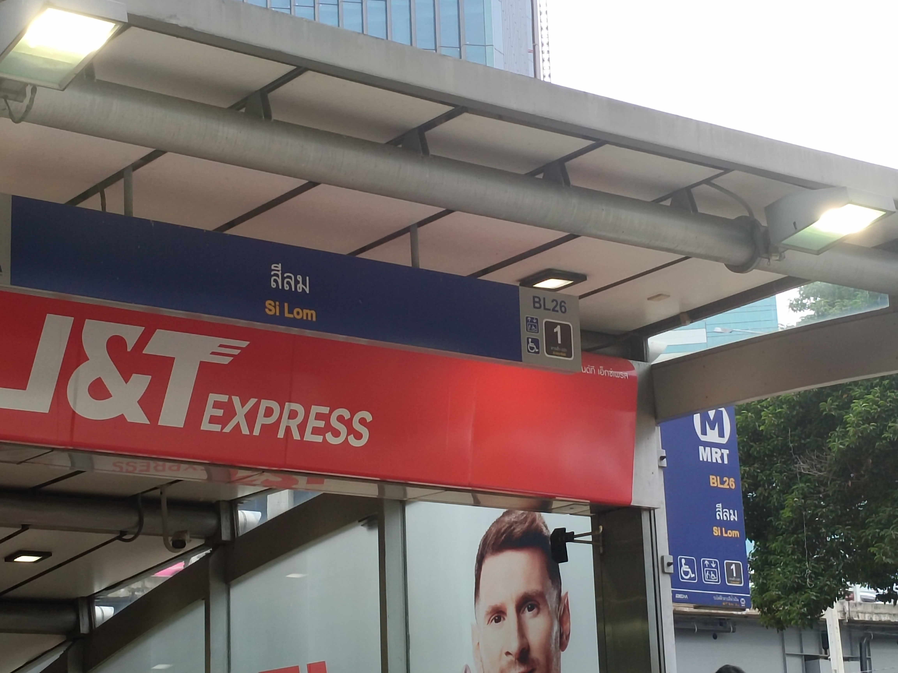
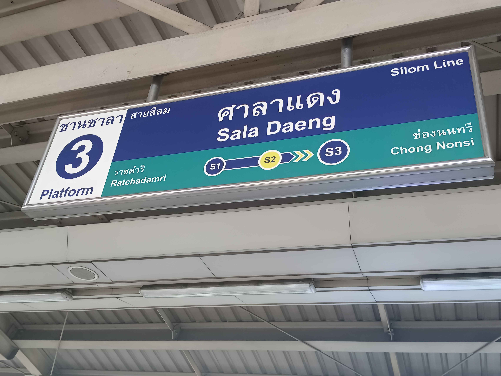
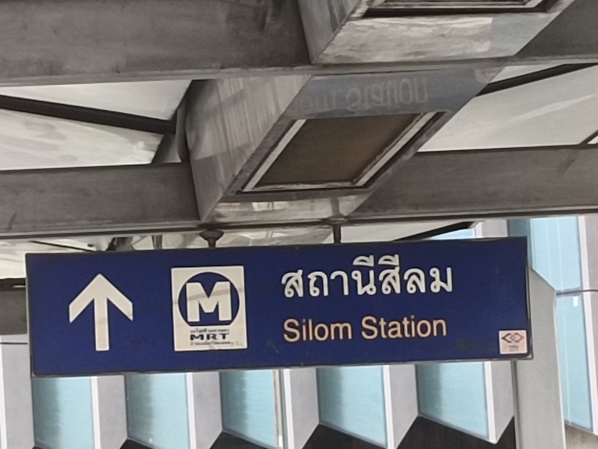
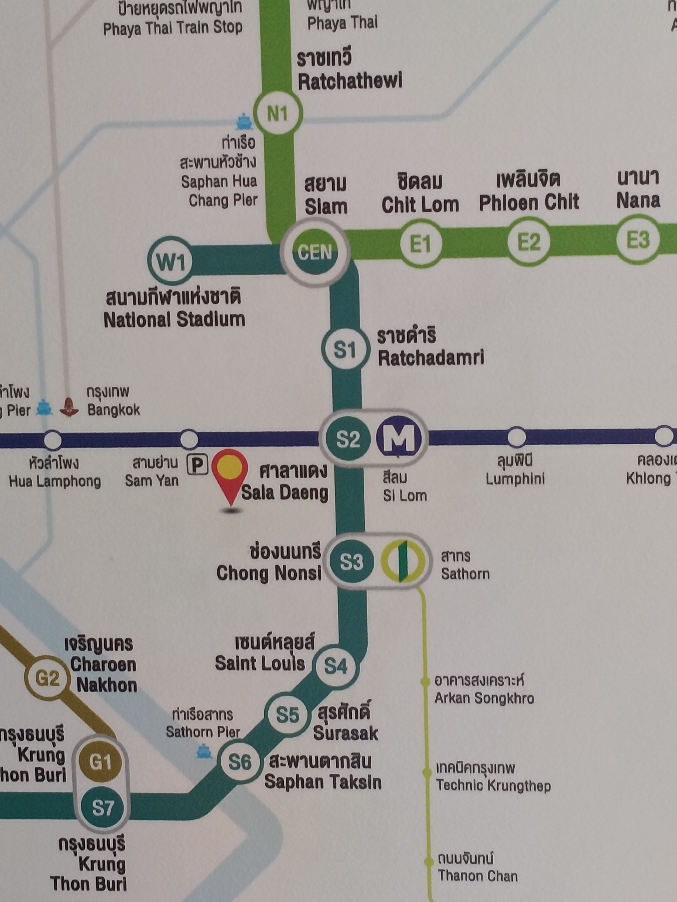

การเดินทางมาสวนลุมพินี

สามารถเดินทางมาทาง MRT สีลม ออกจากสถานีสีลม ทางออกที่ 1 ก็จะเจอทางเข้าสวนลุมพินี


สามารถเดินทางมาทาง BTS ศาลาแดง ทางออกที่ 5 เดินไปตามทาง Skywalk แล้วเดินลงไปยัง MRTสีลม เพื่อทะลุขึ้นมายังทางออกที่1

เส้นทาง BTS สำหรับการเดินทางมายัง BTS ศาลาแดง